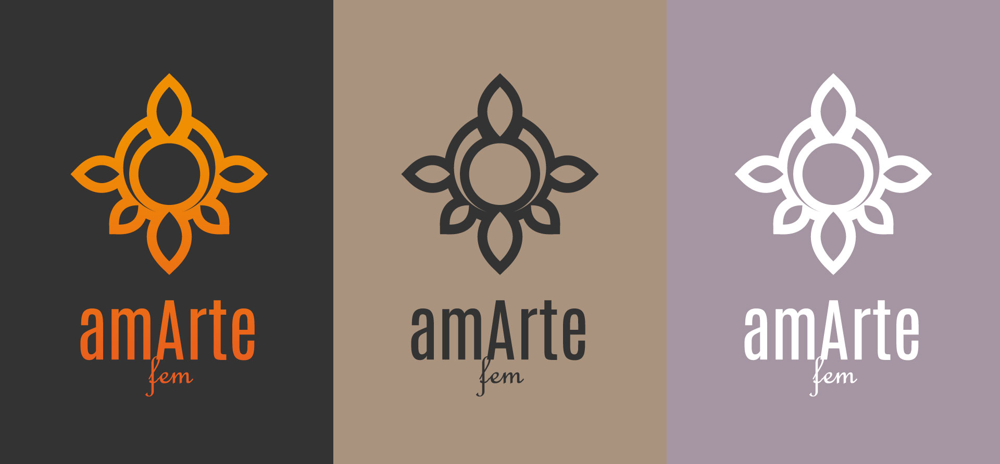
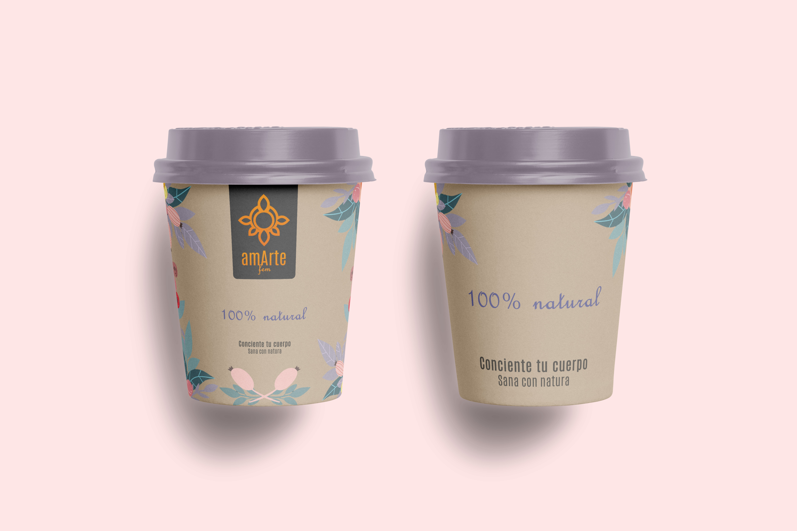
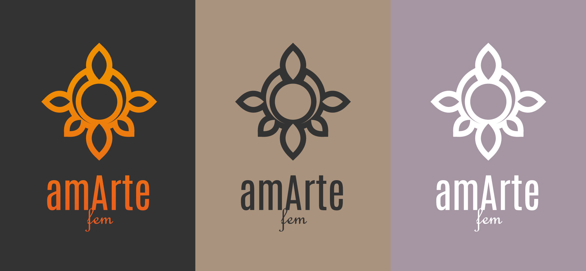
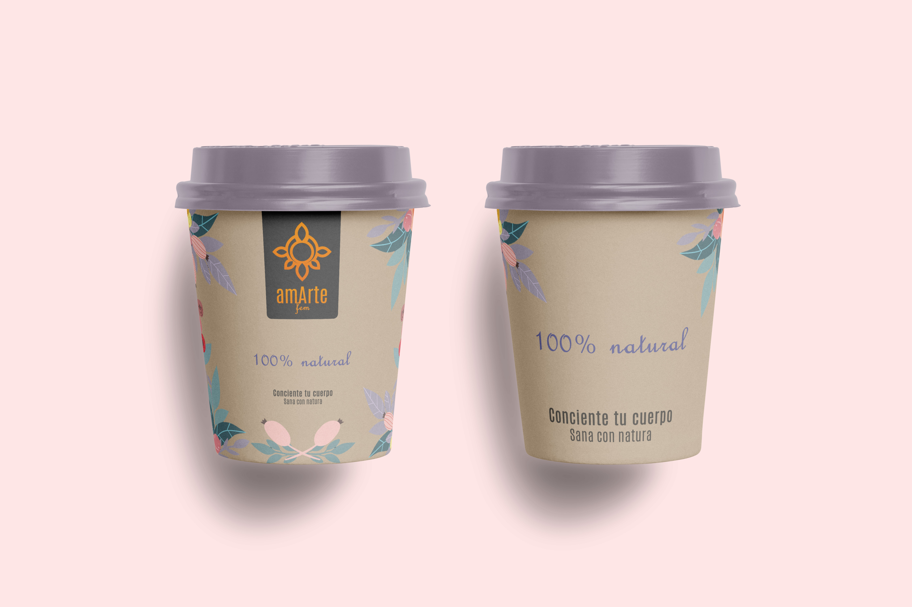

amArte
Herbal Tea house
They needed a re-Branding that could capture the idea of well-being and spirituality. For this, there was an afternoon to experience the ideas of the brand where there was a tea tasting along with relaxing live music and even some dance performances. With all this it was possible to understand the essence of what they seek to share with which they sought to give a new image that reflects the naturalness and peace of the moment, with herbal elements and natural colors that show exactly that.

 


